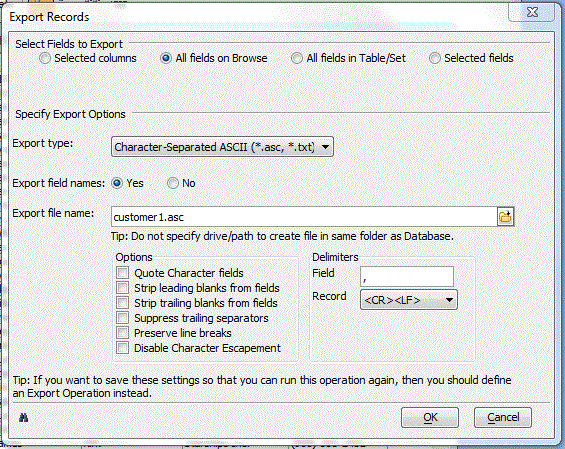

Exporting Selected Records from a Table
You may export selected records from the a table using the Export Operation or when viewing a table through a form or browse.
To export the current selection of records:
Select Records > Export Selected Records... .

Select the fields to copy. If you were viewing a browse, the options are:
Selected columns
All field on Browse
All fields in Table/Set
Selected fields
If you were viewing a form, the options are:
All fields on form
All fields in Table/Set
Selected fields
If you clicked Selected fields, click the Select fields... button to display the Select Fields dialog box.
Optionally, pick a field from the Available fields list and click
 to add it to the Selected fields
list.
to add it to the Selected fields
list.Optionally, pick multiple fields from the Available fields list and click
 to add them to the Selected
fields list.
to add them to the Selected
fields list.Optionally, pick a field from the Selected fields list and click
 to remove it from the Selected fields
list.
to remove it from the Selected fields
list.Optionally, pick multiple fields from the Selected fields list and click
 to remove them to the Selected
fields list.
to remove them to the Selected
fields list.Optionally, click
 to view the Xbasic code generated by this procedure.
to view the Xbasic code generated by this procedure.Click OK to continue or Cancel to discard your inputs.
Select the Export type. The options are:
"Character Separated ASCII (*.asc, *.txt)"
"Table ASCII (*.tbl, *.txt, *.dat)"
"Rich Text Format (RTF) (*.rtf)"
"Microsoft Excel, Version 4.0 (*.xls)"
"Lotus 1-2-3, Version 1/1A (*.wks)"
"Lotus 1-2-3, Version 3.0 (*.wk3)"
Pick whether to Export Field names.
Enter the new file name in the Export file name field.
If you selected "Character Separated ASCII (*.asc, *.txt)" in step 4:
Check the processing Options you want to use. You may:
Quote Character fields.
Strip leading blanks from fields
Strip trailing blanks from fields
Suppress trailing separators
Preserve line breaks
Enter the Field delimiter to use.
Select the Record delimiter to use. The options are:
"<CR><LF>"
"<CR>"
"<LF>"
"<ESC>"
"<TAB>"
If you selected "Table ASCII (*.tbl, *.txt, *.dat)" in step 4, enter the number of spaces between each field.
Optionally, click
to view the Xbasic code generated by this procedure.Click OK to export the selected records or Cancel to quit without taking any action.
See Also